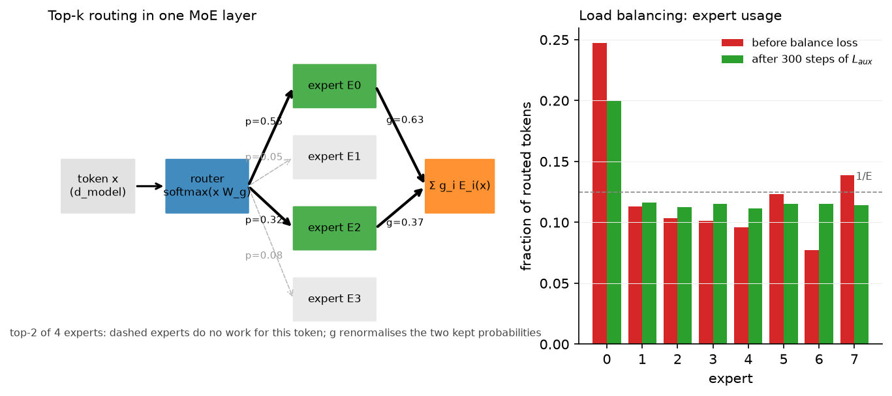
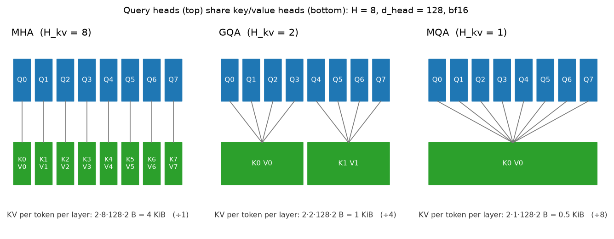

Large-model architecture (MoE, GQA, SSMs)¶
Why this matters at staff level. The GPT-2 block is table stakes; interviews now ask what changed between it and DeepSeek-V3 and why. Every change is an economics argument: MoE decouples parameters from FLOPs, GQA and MLA shrink the KV cache that limits decode batch size, sliding windows and SSMs bound per-token cost in context length. Strong signal is deriving the balance loss, deriving the KV-cache reduction factor, implementing GQA and a top-k MoE from a blank file, and explaining what a selective SSM gives up relative to attention.
TL;DR: the interview card¶
- Dense baseline: pre-norm (RMSNorm) blocks, SwiGLU FFN with \(d_{ff}\approx \tfrac{8}{3}d\), RoPE, no biases, tied or untied embeddings. Llama 2/3, Mistral, Qwen, Gemma are all this.
- MoE: \(y = \sum_{i\in\text{TopK}} g_i(x) E_i(x)\) with \(g = \softmax(xW_g)\) renormalised over the top \(k\). FLOPs scale with active parameters (\(k\) experts), memory with total. Mixtral 8×7B: 46.7B total, 12.9B active. DeepSeek-V3: 671B total, 37B active.
- Balance loss (Switch/GShard): \(L_{aux} = E\sum_i f_i P_i\), \(f_i\) = fraction of tokens routed to \(i\), \(P_i\) = mean router probability of \(i\); equals 1 at perfect balance. DeepSeek-V3 replaces it with a per-expert bias on the routing scores (aux-loss-free).
- Capacity factor \(c\): each expert accepts at most \(c\cdot Nk/E\) tokens; overflow is dropped (residual carries the token). Expert parallelism puts experts on different GPUs and all-to-all's tokens to them.
- GQA: \(H\) query heads share \(H_{kv}\) K/V heads; KV cache shrinks by \(H/H_{kv}\)
(Llama 3 70B: \(64/8 = 8\times\)). MQA is \(H_{kv}=1\). Implement with
repeat_interleave. - Sliding window \(W\): cost \(O(TW)\), cache \(O(W)\), receptive field \(L\cdot W\) across layers (Mistral 7B: \(W=4096\)). Attention sinks keep the first few tokens so streaming does not collapse.
- SSM: \(h_t = \bar A h_{t-1} + \bar B x_t\), \(y_t = C h_t + D x_t\) with \(\bar A = e^{\Delta A}\), \(\bar B = (\bar A - I)A^{-1}B\) (ZOH). LTI ⇒ a convolution with kernel \(K_l = C\bar A^l \bar B\) (train in parallel), recurrence at inference (constant memory). Mamba makes \(\Delta, B, C\) functions of \(x_t\): content-dependent, no convolution, needs a hardware-aware scan.
- MLA (DeepSeek-V2/V3): cache a low-rank latent \(c_t = x_t W^{DKV} \in \R^{d_c}\) (\(d_c = 512\)) plus a shared RoPE key (\(d^R_h = 64\)) instead of \(2Hd_h\) per layer: 576 vs 32,768 numbers per token per layer at DeepSeek-V2 geometry.
1. Intuition first¶
Start from the dense Transformer block of Part V: attention mixes information across positions, the FFN transforms each position. In a 7B model the FFN is about two thirds of the parameters and FLOPs. Three observations drive everything in this chapter.
- Not every token needs every FFN weight. If you split the FFN into 8 experts and route each token to 2, you keep 8 experts' worth of knowledge and pay for 2. That is MoE.
- At decode time the bottleneck is reading the KV cache, not computing. Each generated token reads every cached key and value of every layer. Fewer K/V heads (GQA/MQA), a bounded window (sliding window), or a compressed cache (MLA) all attack that read.
- Attention costs \(O(T)\) per token in context; a recurrence costs \(O(1)\). SSMs are recurrences that can also be trained as convolutions. The price is a fixed-size state, so they compress the past rather than look it up.
A concrete tiny example for routing: four tokens, four experts, top-2. The router produces probabilities per token; the two largest are kept and renormalised.
token p over experts top-2 gates (renormalised)
t0 [0.55 0.05 0.32 0.08] E0,E2 0.63, 0.37
t1 [0.10 0.60 0.10 0.20] E1,E3 0.75, 0.25
t2 [0.50 0.10 0.30 0.10] E0,E2 0.63, 0.37
t3 [0.45 0.05 0.40 0.10] E0,E2 0.53, 0.47
Expert 0 got three tokens, expert 1 one, expert 2 three, expert 3 one. Left alone, routers drift into this kind of imbalance and then into collapse: the busy expert gets more gradient, gets better, and gets picked more. The balance loss counters it.

Left: one token routed to two of four experts; dashed experts do no work for it. Right: expert usage of an 8-expert router that starts imbalanced (one expert takes 25% of slots) and after 300 steps of optimising the balance loss alone: every expert is within a few percent of \(1/E\).
2. The math¶
2.1 Mixture of Experts¶
Router: \(s = xW_g \in \R^{E}\), \(p = \softmax(s)\). Keep \(\mathcal{K}(x) = \text{TopK}(p)\) and renormalise: \(g_i = p_i / \sum_{j\in\mathcal K} p_j\). Output
FLOPs per token: \(k\) expert FFNs plus a tiny router, so active parameters \(N_{\text{act}} \approx N_{\text{attn}} + k\,N_{\text{expert}}\). Memory: all \(E\) experts. Scaling laws (previous chapter) are fit in \(N_{\text{act}}\) and FLOPs; at equal active parameters an MoE reaches a lower loss than a dense model, at the cost of memory and communication.
Load-balancing loss. Let \(f_i\) be the fraction of routing slots assigned to expert \(i\) and \(P_i = \frac1N\sum_x p_i(x)\) the mean router probability. Switch Transformer defines
Why this form: the quantity we want small is the dispersion of \(f\), but \(f\) is a count and has no gradient. \(P\) is differentiable and correlates with \(f\). The product \(\sum_i f_i P_i\) is minimised, subject to \(\sum f_i = \sum P_i = 1\), when both are uniform (by rearrangement, putting probability mass on already-busy experts increases it), and the factor \(E\) normalises the minimum to \(E\cdot E\cdot\frac{1}{E^2} = 1\). The gradient with respect to the router pushes down the probability of experts with large \(f_i\), weighted by how overloaded they are. It is a linear surrogate for the quadratic \(\sum_i (f_i - 1/E)^2\). In practice it is multiplied by a small coefficient (\(10^{-2}\)) and added to the LM loss.
Capacity and dropping. With \(N\) tokens, \(E\) experts and \(k\) slots each, the balanced load is \(Nk/E\) per expert; capacity \(= c\cdot Nk/E\) with \(c \in [1, 2]\). Tokens beyond capacity are dropped for that expert (their contribution is 0 and the residual stream still carries \(x\)). Dropping keeps per-expert tensors static-shaped for the all-to-all, at the cost of the wasted tokens that the balance loss is there to keep rare. Dropless MoEs (Mixtral's implementation, DeepSeek-V3's training) use variable-size grouped GEMMs instead.
Aux-loss-free balancing (DeepSeek-V3). Add a per-expert bias \(b_i\) to the selection score only: choose top-\(k\) on \(s_i + b_i\) but still gate with \(g_i\) from \(s_i\). After each step, decrease \(b_i\) for overloaded experts and increase it for underloaded ones by a fixed \(\gamma\). No gradient interference with the LM loss; the report attributes better quality at equal balance to this.
Fine-grained and shared experts (DeepSeekMoE). Split each expert into \(m\) smaller ones and route to \(mk\) of them: more combinations of knowledge per token at the same FLOPs. Keep \(n_s\) shared experts that every token uses, so common knowledge is not replicated across routed experts. DeepSeek-V3 uses 256 routed experts (8 active) plus 1 shared expert per layer.
2.2 Grouped-query attention and the KV cache¶
Per layer the cache holds one key and one value per KV head per token: \(2\cdot H_{kv}\cdot d_{head}\) numbers. Standard MHA has \(H_{kv} = H\); GQA groups the \(H\) query heads into \(H_{kv}\) groups of \(H/H_{kv}\) that share K and V:
Since decode is memory-bound, that factor is close to the achievable speed-up in KV reading and, more importantly, the factor by which batch size can grow at fixed HBM. Quality: MQA (\(H_{kv}=1\)) loses a little; GQA with \(H_{kv}=8\) is indistinguishable from MHA in the GQA paper's ablations and in Llama 2 70B, which is why it became the default. Parameter count also drops (smaller \(W_K, W_V\)), a minor bonus.

Query heads on top, the K/V heads they read below. The KV bytes per token per layer are divided by the group size.
2.3 Sparse and local attention¶
Sliding window of width \(W\): \(\text{allowed}[i,j] = [j\le i]\wedge[i - j < W]\). Cost per layer \(O(TW)\); cache per sequence \(O(W)\) (a ring buffer); after \(L\) layers information can travel \(LW\) positions, so the receptive field is still large. Block sparse (Longformer, BigBird): local blocks plus a few global tokens everyone attends to, plus random blocks for theoretical expressivity. Attention sinks (StreamingLLM): softmax must put its mass somewhere, and models learn to dump it on the first tokens; if a window evicts them the distribution collapses, so keep the first 4 tokens permanently. Gemma 2 alternates local (4096) and global layers; Mistral 7B used \(W=4096\) everywhere.
2.4 State-space models¶
Continuous linear system with state \(h(t)\in\R^{N}\):
Discretise with step \(\Delta\) under a zero-order hold (input constant over each step). The exact solution over one step is \(h(t+\Delta) = e^{\Delta A}h(t) + \int_0^{\Delta} e^{sA}\,ds\,B\,x(t)\), and for diagonal \(A\) the integral is \((e^{\Delta A} - I)A^{-1}\):
Convolutional view. Unroll with \(h_0 = 0\): \(h_t = \sum_{l=0}^{t}\bar A^{\,l}\bar B x_{t-l}\), so
a causal convolution with kernel \(K\in\R^{T}\). Training uses the convolution (parallel over \(t\), FFT in \(O(T\log T)\)); inference uses the recurrence (constant memory, \(O(1)\) per token). This dual form exists only because the system is linear and time-invariant.
Why S4 needs structure. With dense \(A\in\R^{N\times N}\), computing \(K\) needs \(\bar A^{\,l}\) for all \(l\): \(O(N^2 T)\) and numerically unstable. S4 restricts \(A\) to diagonal-plus-low-rank (with the HiPPO initialisation that makes the state approximate the history's Legendre coefficients) so \(K\) can be computed via a Cauchy kernel in \(\tilde O(N + T)\); later variants (S4D, Mamba) drop the low-rank term and keep \(A\) diagonal, where \(K_l = \sum_n C_n\bar A_n^{\,l}\bar B_n\) is a Vandermonde product.
Selective SSM (Mamba). Make \(\Delta_t, B_t, C_t\) functions of \(x_t\) (linear projections; \(\Delta\) through softplus). Now \(\bar A_t = e^{\Delta_t A}\) varies with content, so the model can choose to forget (\(\Delta\) large) or hold (\(\Delta\) small), and which input dimensions to write (\(B_t\)) and read (\(C_t\)). Cost: the system is no longer time-invariant, so the convolution disappears and training must run the recurrence, which Mamba does with a parallel associative scan fused in SRAM (the same IO-aware idea as FlashAttention). Per-token state is \(d\times N\) numbers, constant in \(T\); attention's per-token state (the cache) grows linearly. What the SSM gives up: exact retrieval of an arbitrary past token, which attention gets for free by keeping every key and value. Hybrids (Jamba: Mamba layers with periodic attention and MoE layers) keep a few attention layers for retrieval and use SSMs for the bulk.
2.5 Multi-head latent attention (literacy)¶
MLA compresses keys and values jointly into a latent \(c^{KV}_t = x_t W^{DKV} \in\R^{d_c}\) and reconstructs per-head keys and values with up-projections: \(k^C_t = c^{KV}_t W^{UK}\), \(v^C_t = c^{KV}_t W^{UV}\). RoPE does not commute with the up-projection, so a small decoupled rotary key \(k^R_t = \text{RoPE}(x_t W^{KR})\in\R^{d^R_h}\) is shared across heads and concatenated. The cache stores only \((c^{KV}_t, k^R_t)\): \(d_c + d^R_h = 512 + 64\) per layer per token (DeepSeek-V2), versus \(2 H d_h = 2\cdot128\cdot128\) for MHA at the same geometry, and \(W^{UK}\) can be absorbed into \(W^Q\) at inference so attention runs directly against the latents. It is GQA-level cache savings with MHA-level quality, at the price of extra projections.
3. Implementation¶
3.1 Top-k MoE with balance loss¶
def load_balancing_loss(probs, indices):
N, E = probs.shape
k = indices.shape[1]
one_hot = F.one_hot(indices, E).sum(dim=1).float() # (N, E) 1 where expert chosen
f = one_hot.sum(dim=0) / (N * k) # (E,) dispatch fraction, sums to 1
P = probs.mean(dim=0) # (E,) mean gate probability
return E * torch.sum(f * P)
f is built from the hard assignments and carries no gradient. The differentiable part of
the loss comes entirely through P. The layer itself loops over experts explicitly: for each expert,
torch.where(indices == e) gives the tokens that chose it (and in which of their \(k\)
slots), an optional capacity truncates that list, the expert runs on the gathered rows, and
index_add_ scatters the gated outputs back. Shared experts run on all tokens and are added
without gating. This is the dispatch/combine pattern that expert parallelism replaces with
an all-to-all.
for e, expert in enumerate(self.experts):
token_idx, slot = torch.where(indices == e) # (n_e,), (n_e,)
if capacity is not None and token_idx.numel() > capacity:
token_idx, slot = token_idx[:capacity], slot[:capacity]
out = expert(flat[token_idx]) # (n_e, d_model)
y.index_add_(0, token_idx, weights[token_idx, slot, None] * out)
3.2 GQA¶
q = self.q_proj(x).view(B, T, self.n_heads, self.d_head).transpose(1, 2) # (B, H, T, d_head)
k = self.k_proj(x).view(B, T, self.n_kv_heads, self.d_head).transpose(1, 2) # (B, H_kv, T, d_head)
v = self.v_proj(x).view(B, T, self.n_kv_heads, self.d_head).transpose(1, 2) # (B, H_kv, T, d_head)
k = k.repeat_interleave(self.group, dim=1) # (B, H, T, d_head)
v = v.repeat_interleave(self.group, dim=1) # (B, H, T, d_head)
scores = q @ k.transpose(-2, -1) / math.sqrt(self.d_head) # (B, H, T, T)
repeat_interleave along the head axis maps query head \(h\) to KV head \(\lfloor h/g\rfloor\)
(heads \(0..g-1\) read KV head 0, and so on); repeat would give \(h \bmod H_{kv}\), which is a
different but equally valid grouping as long as training and inference agree. A production
kernel does not materialise the expanded K/V; it indexes the shared head. The test checks
equivalence with an explicit-expansion reference at \(H_{kv}=H\) (MHA), \(H_{kv}=1\) (MQA) and
\(H_{kv}=2\) of 6.
3.3 SSM, two ways, and the selective scan¶
def ssm_recurrent(x, A_bar, B_bar, C, D):
h = torch.zeros_like(A_bar) # (N,)
for t in range(T):
h = A_bar * h + B_bar * x[t] # (N,)
y[t] = torch.dot(C, h) + D * x[t]
def ssm_kernel(A_bar, B_bar, C, L):
powers = A_bar[None, :] ** torch.arange(L)[:, None] # (L, N) = Ā^l
return powers @ (C * B_bar) # (L,) Σ_n C_n Ā_n^l B̄_n
The kernel is the Vandermonde product of §2.4; ssm_convolutional applies it with a
left-padded conv1d (flipped, because conv1d cross-correlates). The test asserts the two
outputs agree to \(10^{-5}\), which is the LTI duality made executable. selective_scan runs
the Mamba recurrence with per-timestep \(\bar A_t = e^{\Delta_t A}\) and \(\bar B_t = \Delta_t B_t\)
(Mamba's simplified Euler discretisation of \(B\)); with constant \(\Delta, B, C\) it reduces to
the LTI recurrence, which is the second test.
Full implementation: src/mlbook/llm/moe.py
"""A sparse Mixture-of-Experts feed-forward layer with top-k routing and the
Switch/GShard load-balancing auxiliary loss (PyTorch).
y = Σ_{i ∈ TopK(x)} g_i(x) E_i(x) (+ Σ_shared E_s(x) in DeepSeek-style MoE)
Routing: ``p = softmax(x W_g)`` over ``E`` experts, keep the top ``k``, renormalise
their probabilities to sum to 1, dispatch each token to its ``k`` experts.
Balance loss (Switch Transformer, eq. 4; GShard is the same idea):
L_aux = E · Σ_i f_i · P_i, f_i = fraction of tokens routed to expert i,
P_i = mean router probability of expert i.
At perfect balance f_i = P_i = 1/E and L_aux = 1; imbalance raises it. Only the
P_i term is differentiable; f_i is a constant that says *which* expert's
probability to push down.
"""
from __future__ import annotations
import torch
import torch.nn as nn
import torch.nn.functional as F
class Expert(nn.Module):
"""One expert: a SwiGLU-free, plain two-layer MLP ``x -> W2 silu(W1 x)``."""
def __init__(self, d_model: int, d_ff: int) -> None:
super().__init__()
self.w1 = nn.Linear(d_model, d_ff)
self.w2 = nn.Linear(d_ff, d_model)
def forward(self, x: torch.Tensor) -> torch.Tensor:
"""(n_tokens, d_model) -> (n_tokens, d_model)."""
h = F.silu(self.w1(x)) # (n_tokens, d_ff)
return self.w2(h) # (n_tokens, d_model)
class TopKRouter(nn.Module):
"""Linear gate + softmax + top-k with renormalised weights."""
def __init__(self, d_model: int, n_experts: int, k: int) -> None:
super().__init__()
self.gate = nn.Linear(d_model, n_experts, bias=False)
self.k = k
def forward(self, x: torch.Tensor) -> tuple[torch.Tensor, torch.Tensor, torch.Tensor]:
"""Route ``x``.
Args:
x: (N, d_model) tokens (batch and time already flattened).
Returns:
weights: (N, k) gate values, rows sum to 1.
indices: (N, k) chosen expert ids.
probs: (N, E) full softmax, needed by the balance loss.
"""
logits = self.gate(x) # (N, E)
probs = torch.softmax(logits, dim=-1) # (N, E)
top_p, indices = probs.topk(self.k, dim=-1) # (N, k), (N, k)
weights = top_p / top_p.sum(dim=-1, keepdim=True) # (N, k)
return weights, indices, probs
def load_balancing_loss(probs: torch.Tensor, indices: torch.Tensor) -> torch.Tensor:
"""Switch-style auxiliary loss ``E Σ_i f_i P_i`` (=1 when perfectly balanced).
Args:
probs: (N, E) router softmax.
indices: (N, k) selected experts per token.
Returns:
scalar loss.
"""
N, E = probs.shape
k = indices.shape[1]
one_hot = F.one_hot(indices, E).sum(dim=1).float() # (N, E) 1 where expert chosen
f = one_hot.sum(dim=0) / (N * k) # (E,) dispatch fraction, sums to 1
P = probs.mean(dim=0) # (E,) mean gate probability, sums to 1
return E * torch.sum(f * P)
class MoELayer(nn.Module):
"""Sparse MoE FFN with optional expert capacity (token dropping) and shared experts.
Args:
n_experts: routed experts ``E``.
k: experts per token.
n_shared: always-on experts added to every token (DeepSeek-V2/V3 style).
capacity_factor: if set, each expert accepts at most
``ceil(capacity_factor * N * k / E)`` tokens per forward; extra tokens
are dropped (their expert contribution is zero, the residual stream
still carries them). ``None`` = no dropping.
"""
def __init__(
self,
d_model: int,
d_ff: int,
n_experts: int,
k: int = 2,
n_shared: int = 0,
capacity_factor: float | None = None,
) -> None:
super().__init__()
self.router = TopKRouter(d_model, n_experts, k)
self.experts = nn.ModuleList([Expert(d_model, d_ff) for _ in range(n_experts)])
self.shared = nn.ModuleList([Expert(d_model, d_ff) for _ in range(n_shared)])
self.n_experts, self.k, self.capacity_factor = n_experts, k, capacity_factor
self.last_usage: torch.Tensor | None = None # (E,) tokens processed per expert
def forward(self, x: torch.Tensor) -> tuple[torch.Tensor, torch.Tensor]:
"""Args: x (B, T, d_model). Returns (y (B, T, d_model), aux_loss scalar)."""
B, T, d = x.shape
flat = x.reshape(B * T, d) # (N, d_model), N = B*T
weights, indices, probs = self.router(flat) # (N, k), (N, k), (N, E)
y = torch.zeros_like(flat) # (N, d_model)
capacity = None
if self.capacity_factor is not None:
capacity = int(-(-self.capacity_factor * flat.shape[0] * self.k // self.n_experts))
usage = torch.zeros(self.n_experts)
for e, expert in enumerate(self.experts):
token_idx, slot = torch.where(indices == e) # (n_e,), (n_e,) which tokens chose e
if capacity is not None and token_idx.numel() > capacity:
token_idx, slot = token_idx[:capacity], slot[:capacity] # drop the overflow
if token_idx.numel() == 0:
continue
usage[e] = token_idx.numel()
out = expert(flat[token_idx]) # (n_e, d_model)
y.index_add_(0, token_idx, weights[token_idx, slot, None] * out) # scatter-add
for expert in self.shared:
y = y + expert(flat) # (N, d_model) shared experts see every token
self.last_usage = usage
return y.reshape(B, T, d), load_balancing_loss(probs, indices)
def expert_usage_fraction(indices: torch.Tensor, n_experts: int) -> torch.Tensor:
"""(E,) fraction of routing slots assigned to each expert (sums to 1)."""
counts = torch.bincount(indices.reshape(-1), minlength=n_experts).float() # (E,)
return counts / counts.sum()
Full implementation: src/mlbook/llm/gqa.py
"""Grouped-query attention (GQA), with MHA and MQA as the two extremes.
``H`` query heads share ``H_kv`` key/value heads; every group of ``H / H_kv``
consecutive query heads reads the same K, V. The KV cache per token shrinks by
``H / H_kv``: MHA (H_kv = H) -> factor 1, MQA (H_kv = 1) -> factor H.
Implementation is explicit: three separate projections, ``repeat_interleave`` to
expand K/V to the query-head count, a causal mask, softmax, output projection.
"""
from __future__ import annotations
import math
import torch
import torch.nn as nn
class GroupedQueryAttention(nn.Module):
"""Causal GQA. ``n_kv_heads == n_heads`` is MHA; ``n_kv_heads == 1`` is MQA."""
def __init__(self, d_model: int, n_heads: int, n_kv_heads: int) -> None:
super().__init__()
if n_heads % n_kv_heads != 0:
raise ValueError("n_heads must be a multiple of n_kv_heads")
self.n_heads, self.n_kv_heads = n_heads, n_kv_heads
self.d_head = d_model // n_heads
self.group = n_heads // n_kv_heads # query heads per KV head
self.q_proj = nn.Linear(d_model, n_heads * self.d_head, bias=False)
self.k_proj = nn.Linear(d_model, n_kv_heads * self.d_head, bias=False)
self.v_proj = nn.Linear(d_model, n_kv_heads * self.d_head, bias=False)
self.o_proj = nn.Linear(n_heads * self.d_head, d_model, bias=False)
def project(self, x: torch.Tensor) -> tuple[torch.Tensor, torch.Tensor, torch.Tensor]:
"""(B, T, d_model) -> q (B, H, T, d_head), k/v (B, H_kv, T, d_head)."""
B, T, _ = x.shape
q = self.q_proj(x).view(B, T, self.n_heads, self.d_head).transpose(1, 2) # (B, H, T, d_head)
k = self.k_proj(x).view(B, T, self.n_kv_heads, self.d_head).transpose(1, 2) # (B, H_kv, T, d_head)
v = self.v_proj(x).view(B, T, self.n_kv_heads, self.d_head).transpose(1, 2) # (B, H_kv, T, d_head)
return q, k, v
def forward(self, x: torch.Tensor) -> torch.Tensor:
"""Causal self-attention. (B, T, d_model) -> (B, T, d_model)."""
B, T, _ = x.shape
q, k, v = self.project(x)
# Expand each KV head to its `group` query heads: head h reads kv head h // group.
k = k.repeat_interleave(self.group, dim=1) # (B, H, T, d_head)
v = v.repeat_interleave(self.group, dim=1) # (B, H, T, d_head)
scores = q @ k.transpose(-2, -1) / math.sqrt(self.d_head) # (B, H, T, T)
causal = torch.tril(torch.ones(T, T, dtype=torch.bool, device=x.device)) # (T, T)
scores = scores.masked_fill(~causal, float("-inf")) # (B, H, T, T)
attn = torch.softmax(scores, dim=-1) # (B, H, T, T)
out = attn @ v # (B, H, T, d_head)
out = out.transpose(1, 2).reshape(B, T, self.n_heads * self.d_head) # (B, T, H*d_head)
return self.o_proj(out) # (B, T, d_model)
def kv_bytes_per_token(self, dtype_bytes: int = 2) -> int:
"""KV-cache bytes per token for *this layer*: 2 · H_kv · d_head · bytes."""
return 2 * self.n_kv_heads * self.d_head * dtype_bytes
def kv_cache_reduction_factor(n_heads: int, n_kv_heads: int) -> float:
"""H / H_kv: how much smaller the KV cache is than MHA's."""
return n_heads / n_kv_heads
Full implementation: src/mlbook/llm/sliding_window.py
"""Sparse attention masks: sliding window (Mistral), block-sparse with global
tokens (Longformer/BigBird style), and attention sinks (StreamingLLM), plus a
rolling KV buffer that shows why a window bounds cache memory.
Masks are ``(T, T)`` booleans, ``True`` = query i may attend key j.
"""
from __future__ import annotations
import math
import torch
def sliding_window_mask(T: int, window: int) -> torch.Tensor:
"""Causal mask restricted to the last ``window`` keys (inclusive of self).
allowed[i, j] = (j <= i) and (i - j < window). Shape (T, T).
"""
i = torch.arange(T)[:, None] # (T, 1)
j = torch.arange(T)[None, :] # (1, T)
return (j <= i) & (i - j < window) # (T, T)
def attention_sink_mask(T: int, window: int, n_sink: int) -> torch.Tensor:
"""Sliding window plus the first ``n_sink`` tokens always visible (StreamingLLM)."""
mask = sliding_window_mask(T, window) # (T, T)
i = torch.arange(T)[:, None] # (T, 1)
j = torch.arange(T)[None, :] # (1, T)
return mask | ((j < n_sink) & (j <= i)) # (T, T)
def block_sparse_mask(T: int, block: int, global_tokens: int = 0) -> torch.Tensor:
"""Causal block-local attention (current + previous block) with leading global tokens.
Tokens attend to every key in their own block and the previous block; the
first ``global_tokens`` keys are visible to all queries and attend to all keys
(causally). Shape (T, T).
"""
i = torch.arange(T)[:, None] # (T, 1)
j = torch.arange(T)[None, :] # (1, T)
bi, bj = i // block, j // block # block index of query / key
local = (bj == bi) | (bj == bi - 1) # (T, T)
glob = (j < global_tokens) | (i < global_tokens) # (T, T)
return (local | glob) & (j <= i) # (T, T)
def masked_attention(q: torch.Tensor, k: torch.Tensor, v: torch.Tensor, mask: torch.Tensor) -> torch.Tensor:
"""softmax(QK^T/sqrt(d) + mask) V with a boolean (T, T) mask.
Args:
q, k, v: (B, H, T, d_head).
mask: (T, T) bool.
Returns:
(B, H, T, d_head).
"""
d_head = q.shape[-1]
scores = q @ k.transpose(-2, -1) / math.sqrt(d_head) # (B, H, T, T)
scores = scores.masked_fill(~mask, float("-inf")) # (B, H, T, T)
return torch.softmax(scores, dim=-1) @ v # (B, H, T, d_head)
class RollingKVCache:
"""Fixed-size ring buffer of the last ``window`` keys/values (Mistral's rolling cache).
Memory is O(window) regardless of how many tokens have been generated.
"""
def __init__(self, window: int, n_kv_heads: int, d_head: int) -> None:
self.window = window
self.k = torch.zeros(1, n_kv_heads, window, d_head) # (1, H_kv, W, d_head)
self.v = torch.zeros(1, n_kv_heads, window, d_head) # (1, H_kv, W, d_head)
self.n_seen = 0
def append(self, k_t: torch.Tensor, v_t: torch.Tensor) -> None:
"""Insert one token's K, V of shape (1, H_kv, 1, d_head) at slot t mod window."""
slot = self.n_seen % self.window
self.k[:, :, slot] = k_t[:, :, 0] # (1, H_kv, d_head)
self.v[:, :, slot] = v_t[:, :, 0] # (1, H_kv, d_head)
self.n_seen += 1
def window_kv(self) -> tuple[torch.Tensor, torch.Tensor]:
"""Return the cached K, V in *chronological* order, shape (1, H_kv, min(n, W), d_head)."""
n = min(self.n_seen, self.window)
start = self.n_seen - n
order = torch.arange(start, self.n_seen) % self.window # (n,) ring slots, oldest first
return self.k[:, :, order], self.v[:, :, order] # (1, H_kv, n, d_head) each
Full implementation: src/mlbook/llm/ssm.py
"""State-space models from the continuous system to Mamba's selective scan (PyTorch).
Continuous: h'(t) = A h(t) + B x(t), y(t) = C h(t) + D x(t)
ZOH discretisation with step Δ (diagonal A of shape (N,)):
Ā = exp(Δ A), B̄ = (Ā − 1) / A · B (exact for a zero-order-held input)
Recurrence: h_t = Ā h_{t−1} + B̄ x_t, y_t = C h_t + D x_t
Convolution: y = K * x with K_l = C Ā^l B̄ (l = 0..L−1), valid because the
system is linear and time-invariant (LTI): unroll the recurrence.
Selective (Mamba/S6): Δ, B, C become functions of x_t, so the system is no longer
time-invariant: the convolutional shortcut disappears and you must scan.
"""
from __future__ import annotations
import torch
import torch.nn as nn
import torch.nn.functional as F
def discretize_zoh(A: torch.Tensor, B: torch.Tensor, delta: float) -> tuple[torch.Tensor, torch.Tensor]:
"""Zero-order-hold discretisation of a diagonal SSM.
Args:
A: (N,) diagonal of the (negative) state matrix.
B: (N,) input vector.
delta: step size Δ > 0.
Returns:
(A_bar (N,), B_bar (N,)).
"""
A_bar = torch.exp(delta * A) # (N,)
B_bar = (A_bar - 1.0) / A * B # (N,) = ∫_0^Δ exp(sA) ds · B
return A_bar, B_bar
def ssm_recurrent(x: torch.Tensor, A_bar: torch.Tensor, B_bar: torch.Tensor, C: torch.Tensor, D: float) -> torch.Tensor:
"""Run the recurrence h_t = Ā h_{t−1} + B̄ x_t, y_t = C h_t + D x_t.
Args:
x: (T,) scalar input sequence.
A_bar, B_bar, C: (N,) each.
Returns:
y: (T,).
"""
T = x.shape[0]
h = torch.zeros_like(A_bar) # (N,) hidden state
y = torch.zeros(T, dtype=x.dtype) # (T,)
for t in range(T):
h = A_bar * h + B_bar * x[t] # (N,)
y[t] = torch.dot(C, h) + D * x[t] # scalar
return y
def ssm_kernel(A_bar: torch.Tensor, B_bar: torch.Tensor, C: torch.Tensor, L: int) -> torch.Tensor:
"""Convolution kernel K_l = C Ā^l B̄ for l = 0..L−1, shape (L,)."""
powers = A_bar[None, :] ** torch.arange(L, dtype=A_bar.dtype)[:, None] # (L, N) = Ā^l
return powers @ (C * B_bar) # (L,) Σ_n C_n Ā_n^l B̄_n
def ssm_convolutional(x: torch.Tensor, K: torch.Tensor, D: float) -> torch.Tensor:
"""Causal convolution y_t = Σ_{l≤t} K_l x_{t−l} + D x_t via one conv1d call.
Args:
x: (T,), K: (L,) with L ≥ T.
Returns:
y: (T,).
"""
T = x.shape[0]
x_pad = F.pad(x, (T - 1, 0))[None, None, :] # (1, 1, 2T-1) left-pad for causality
kernel = K[:T].flip(0)[None, None, :] # (1, 1, T) conv1d cross-correlates, so flip
y = F.conv1d(x_pad, kernel)[0, 0] # (T,)
return y + D * x
def selective_scan(
x: torch.Tensor, delta: torch.Tensor, A: torch.Tensor, B: torch.Tensor, C: torch.Tensor, D: torch.Tensor
) -> torch.Tensor:
"""Mamba's S6 scan with input-dependent Δ, B, C (sequential reference version).
Per channel d and state n: Ā_{t,d,n} = exp(Δ_{t,d} A_{d,n}), B̄_{t,d,n} = Δ_{t,d} B_{t,n}
(Mamba uses the Euler-style B̄ = Δ B), h_t = Ā_t ⊙ h_{t−1} + B̄_t x_t, y_t = ⟨C_t, h_t⟩ + D x_t.
Args:
x: (B, T, d) input.
delta: (B, T, d) positive step sizes.
A: (d, N) state matrix diagonal per channel (negative).
B, C: (B, T, N) input-dependent projections.
D: (d,) skip.
Returns:
y: (B, T, d).
"""
Bsz, T, d = x.shape
N = A.shape[1]
h = torch.zeros(Bsz, d, N, dtype=x.dtype) # (B, d, N)
ys = []
for t in range(T):
A_bar = torch.exp(delta[:, t, :, None] * A[None]) # (B, d, N)
B_bar = delta[:, t, :, None] * B[:, t, None, :] # (B, d, N)
h = A_bar * h + B_bar * x[:, t, :, None] # (B, d, N)
y_t = (h * C[:, t, None, :]).sum(-1) + D[None] * x[:, t] # (B, d)
ys.append(y_t)
return torch.stack(ys, dim=1) # (B, T, d)
class SelectiveSSM(nn.Module):
"""Toy S6 block: x -> (Δ, B, C) via three separate linears, then selective scan."""
def __init__(self, d_model: int, d_state: int) -> None:
super().__init__()
self.A_log = nn.Parameter(torch.log(torch.arange(1, d_state + 1).float()).repeat(d_model, 1)) # (d, N)
self.D = nn.Parameter(torch.ones(d_model)) # (d,)
self.to_delta = nn.Linear(d_model, d_model)
self.to_B = nn.Linear(d_model, d_state, bias=False)
self.to_C = nn.Linear(d_model, d_state, bias=False)
def forward(self, x: torch.Tensor) -> torch.Tensor:
"""(B, T, d_model) -> (B, T, d_model)."""
delta = F.softplus(self.to_delta(x)) # (B, T, d) positive step per channel
B = self.to_B(x) # (B, T, N)
C = self.to_C(x) # (B, T, N)
A = -torch.exp(self.A_log) # (d, N) negative for stability
return selective_scan(x, delta, A, B, C, self.D) # (B, T, d)
How you'd test it. MoE: balance loss equals 1 for round-robin routing; with \(k = E\) the layer equals the dense weighted sum; optimising the balance loss alone from an imbalanced router brings every expert under \(2/E\). GQA: equivalence with an explicit-expansion reference for MHA, MQA and an intermediate grouping, plus a causality check. SSM: recurrent = convolutional; selective = LTI when inputs are constant. Sliding window: a rolling ring buffer reproduces the windowed attention of the last token.
Retype by hand¶
| Symbol | File | Target time |
|---|---|---|
GroupedQueryAttention |
src/mlbook/llm/gqa.py |
20 minutes |
TopKRouter, load_balancing_loss, MoELayer.forward |
src/mlbook/llm/moe.py |
25 minutes |
sliding_window_mask |
src/mlbook/llm/sliding_window.py |
5 minutes |
discretize_zoh, ssm_recurrent, ssm_kernel |
src/mlbook/llm/ssm.py |
15 minutes |
selective_scan |
src/mlbook/llm/ssm.py |
10 minutes |
Fine to just read: Expert, expert_usage_fraction, attention_sink_mask,
block_sparse_mask, RollingKVCache, ssm_convolutional, SelectiveSSM.
Check with python -m pytest tests/test_llm_gqa.py tests/test_llm_moe.py tests/test_llm_sliding_window.py tests/test_llm_ssm.py -q
(test_gqa_equals_mha_when_kv_heads_equal_heads, test_gqa_equals_mqa_when_one_kv_head,
test_router_topk_weights_sum_to_one, test_load_balancing_loss_is_one_when_balanced_and_larger_when_not,
test_moe_with_k_equals_E_is_dense_weighted_sum, test_balance_loss_makes_routing_balanced,
test_sliding_window_mask_values, test_zoh_matches_exact_solution_for_scalar_system,
test_recurrent_equals_convolutional, test_selective_scan_reduces_to_lti_when_inputs_are_constant).
4. Systems view: cost, failure modes, trade-offs¶
MoE. FLOPs per token \(\approx 2(N_{\text{attn}} + kN_{\text{exp}})\); memory \(N_{\text{attn}} + EN_{\text{exp}}\). With expert parallelism each GPU holds a subset of experts and every MoE layer does two all-to-alls (dispatch, combine) per micro-batch; at DeepSeek-V3 scale the communication design (limiting each token to at most 4 nodes, overlapping all-to-all with compute) is a first-class part of the architecture. Failure modes: routing collapse (fix: balance loss or bias), capacity overflow (fix: dropless GEMMs or higher \(c\)), poor batching at inference because a batch of 1 token still touches \(k\) experts' weights (MoE decode is more memory-bound than dense at equal active parameters), and fine-tuning instability (routers are sensitive; freeze them or lower their LR).
GQA/MQA/MLA. All three shrink the cache; none changes FLOPs materially. GQA is a retrofit-friendly change (mean-pool the K/V heads of an MHA checkpoint and continue training, as the GQA paper does). MLA needs the architecture from the start and extra projections. Trade-off table:
| Method | KV per token per layer | Quality | Retrofit | Used by |
|---|---|---|---|---|
| MHA | \(2Hd_h\) | reference | n/a | GPT-3, Llama 1, Llama 2 ≤13B |
| GQA (\(H_{kv}=8\)) | \(2\cdot 8 d_h\) | ≈MHA | yes (uptrain) | Llama 2 70B, Llama 3, Mistral, Qwen2, Gemma 2 |
| MQA | \(2d_h\) | small loss | yes | PaLM, Falcon, StarCoder |
| MLA | \(d_c + d^R_h\) | ≈MHA (reported better) | no | DeepSeek-V2/V3 |
Sliding window vs full attention. Window \(W\) bounds cost and cache, and works with FlashAttention masks. But needle-in-a-haystack retrieval beyond \(W\) degrades even though the theoretical receptive field is \(LW\); that is why Gemma 2 interleaves global layers and why Mistral's later models moved away from pure SWA. Decision rule: SWA for throughput in the bulk of layers, a few global layers for retrieval.
SSMs. Per-token cost \(O(dN)\) independent of \(T\) and no cache growth make Mamba attractive for very long sequences and streaming; state size \(dN\) (e.g. \(4096\times16\)) is ~64k numbers per layer, versus a KV cache that reaches that after only 256 tokens of GQA. Weaknesses: in-context retrieval and copying, which hybrids fix by keeping ~1 in 8 layers as attention (Jamba), and immature kernels relative to attention.
When to use what.
| Situation | Decision rule |
|---|---|
| Fixed serving cost, want max quality | MoE with \(k=2\) of 8–16 (or fine-grained), \(N_{\text{act}}\) sized to latency; expect ~2× memory of a dense model of equal quality |
| Memory-limited single-GPU serving | dense + GQA + INT4 weights (chapter 5); MoE only if total params fit |
| Long-context, retrieval-heavy | full or GQA attention with FlashAttention; add MLA if you own the architecture |
| Streaming / very long, summarisation-like | SSM or hybrid; attention sinks + SWA as a cheap retrofit |
| Fine-tuning an MoE | freeze routers or use a much lower router LR; watch expert usage |
5. In production¶
Mistral AI: Mixtral 8×7B
A sparse MoE with 8 experts per layer, top-2 routing, built on the Mistral 7B block (GQA, SWA). 46.7B total parameters, 12.9B used per token; matches or beats Llama 2 70B on most benchmarks at roughly the inference cost of a 13B dense model. They chose MoE for the cost/quality frontier and released weights, which made MoE serving (expert parallelism in vLLM and others) a commodity. The paper's routing analysis shows experts specialise by syntax more than by topic. Sources: Mixtral of Experts (paper), Mixtral blog.
DeepSeek: DeepSeek-V2 and V3
V2 introduced MLA (cache cut by 93.3% relative to their dense 67B model) and DeepSeekMoE (fine-grained + shared experts); V3 scaled to 671B total / 37B active parameters with 256 routed experts, aux-loss-free balancing, multi-token prediction, FP8 training and a custom all-to-all that limits each token to 4 nodes. The whole design is an argument about memory and communication: MLA to make decode batches large, expert parallelism engineered around the network. Alternative rejected: the Switch-style auxiliary loss, which their ablations show hurts quality at equal balance. Sources: DeepSeek-V2, DeepSeek-V3 Technical Report.
Meta: GQA in Llama 2 70B and Llama 3
Llama 2 used MHA up to 13B and switched to GQA with 8 KV heads at 70B. Llama 3 applies GQA with 8 KV heads at every size, including 405B, where 128 query heads give a 16× cache reduction. The stated reason is inference scalability: decode batch size at 8k–128k context is set by the cache. The Llama 3 paper also masks attention across documents within packed sequences (chapter 1). Source: The Llama 3 Herd of Models.
Mistral AI: Mistral 7B sliding window
Mistral 7B used GQA and a 4096-token sliding window with a rolling cache, reporting a 2× attention speed-up at 16k sequence length over vanilla attention with the same kernels, and a theoretical receptive field of about 131k tokens over 32 layers. The design was chosen for throughput at a fixed 7B budget; later long-context models in the industry mostly moved to full or interleaved attention because pure SWA weakens long-range retrieval. Source: Mistral 7B.
6. Interview questions and strong answers¶
Derive the KV-cache reduction of GQA and explain why it matters more than the FLOP savings.
Per layer per token the cache is \(2H_{kv}d_h\) numbers; MHA has \(H_{kv} = H\), so the ratio is \(H/H_{kv}\): 8× for Llama 3 70B. Decode is memory-bound (chapter 4): each step reads the whole cache, so bytes read per token, and the number of sequences that fit in HBM, scale with cache size. FLOP savings are negligible (\(W_K, W_V\) are a small fraction of parameters). Staff follow-up: Why not MQA everywhere? Quality drops slightly and tensor parallelism likes \(H_{kv}\) divisible by the TP degree; 8 KV heads spread one per GPU across an 8-way TP group.
Explain the MoE balance loss and its failure modes.
\(L_{aux} = E\sum_i f_iP_i\); \(f\) is the hard dispatch fraction (no gradient) and \(P\) the mean soft probability; the product is minimised at uniform load and the factor \(E\) makes the minimum 1. Failure modes: too large a coefficient hurts the LM loss by forcing uninformative routing; too small allows collapse; the loss is per-batch so it balances at micro-batch granularity, not per device. DeepSeek-V3 avoids the gradient interference with a bias on selection scores updated by a fixed step. Staff follow-up: Why does balance matter beyond quality? Expert parallelism: an overloaded expert's GPU sets the step time and overflow tokens are dropped.
Active vs total parameters: how do you size an MoE?
Cost to run scales with active parameters (FLOPs and, at decode, the weights actually read); cost to hold scales with total. I size active parameters to the latency target and total parameters to the memory of the serving topology, then pick \(E\) and \(k\) to fill it, preferring fine-grained experts with a shared expert. Scaling laws are fit in active parameters. Staff follow-up: Why is MoE decode less efficient than the active-param count suggests? With small batches each token touches different experts, so the weights read per token approach the total, not the active count; large batches restore the advantage.
Derive the discrete SSM from the continuous one and explain the two computation modes.
Solve \(h' = Ah + Bx\) over one step with \(x\) held constant: \(h_{t} = e^{\Delta A}h_{t-1} + (e^{\Delta A}-I)A^{-1}Bx_t\). Because \(\bar A, \bar B, C\) are constant, unrolling gives \(y_t = \sum_l C\bar A^l\bar B x_{t-l}\), a convolution: parallel training. At inference run the recurrence with \(O(N)\) state. Mamba makes \(\Delta, B, C\) input-dependent, gaining content-based gating and losing the convolution, so it needs a parallel scan. Staff follow-up: What can attention do that an SSM can't? Exact lookup of any past token; the SSM's state is a lossy summary, which is why hybrids keep some attention layers.
Why does a sliding window not lose everything older than \(W\)?
Each layer moves information forward by up to \(W\) positions, so after \(L\) layers a token can depend on the last \(LW\) positions through intermediate representations, at the cost of that information being compressed. Empirically retrieval beyond \(W\) still degrades, so production models interleave global layers. And a naive window evicts the attention sink tokens, which collapses the softmax; keep the first few tokens.
What does MLA cache and why does RoPE need special handling?
A low-rank latent \(c_t\in\R^{d_c}\) from which per-head K and V are reconstructed, plus a small shared rotary key. RoPE rotates keys by position after projection; if the up-projection were applied after RoPE the rotation would not factor out, and if before, the latent would have to be re-rotated for each query position. Decoupling a separate RoPE key of dimension 64 sidesteps it. The up-projection can be folded into \(W^Q\) so attention is computed against the latents directly.
7. Exercises¶
-
★ Compute KV bytes per token per layer for Llama 3 405B (128 heads, 8 KV heads, \(d_h = 128\), bf16) and the factor saved versus MHA.
Solution
\(2\cdot 8\cdot 128\cdot 2 = 4096\) bytes (4 KiB) per layer; MHA would be 64 KiB. Factor \(128/8 = 16\).
-
★★ Show that \(\sum_i f_iP_i \ge 1/E\) with equality iff \(f = P = (1/E,\dots,1/E)\), given that \(f\) and \(P\) are probability vectors and the router is such that \(f\) is monotone in \(P\).
Solution
By Chebyshev's sum inequality, for similarly ordered sequences \(\sum_i f_iP_i \ge \frac1E\sum_i f_i\sum_i P_i = 1/E\), with equality iff one of them is constant. Under the monotone routing assumption both being constant coincide with perfect balance, giving \(L_{aux} = E\cdot 1/E = 1\).
-
★★ (coding) Add expert-choice routing to
MoELayer: each expert picks its top-\(c\) tokens instead of each token picking experts. Verify with a test that no expert ever exceeds capacity and that the balance loss is 1 by construction.Solution
Compute
probsas before; for each experte,token_idx = probs[:, e].topk(capacity).indicesand weightprobs[token_idx, e]; scatter as in the layer. Every expert processes exactlycapacitytokens so \(f_i = 1/E\) and \(L_{aux} = \sum_i P_i = 1\). Some tokens may receive no expert (that is the known drawback; the residual carries them), and the method is not causal at decode time because the top-\(c\) over tokens looks across the sequence, which is why it is used for encoders or with per-step re-selection. -
★★ Using
attention_hbm-style reasoning, estimate the per-token state of a Mamba layer with \(d = 4096\), \(N = 16\) and compare with the KV cache of a GQA layer with \(H_{kv} = 8\), \(d_h = 128\) at contexts of 1k, 32k and 1M tokens.Solution
Mamba state: \(dN = 65{,}536\) numbers per layer, constant. GQA cache: \(2\cdot 8\cdot 128 = 2048\) numbers per token: \(2\)M at 1k, \(67\)M at 32k, \(2.1\)B at 1M. The SSM wins past 32 tokens of context in memory; attention wins on exact recall.
-
★★★ Explain why
repeat_interleaveandrepeatproduce different but both valid GQA models, and why converting an MHA checkpoint to GQA by mean-pooling K/V heads must respect the same grouping. Write the test that would catch a mismatch.Solution
repeat_interleavegives head \(h\) KV head \(\lfloor h/g\rfloor\);repeatgives \(h \bmod H_{kv}\). Both are bijective assignments of query heads to groups; the model learns under whichever it trained with. A checkpoint converted by pooling heads \(\{0..g-1\}\) into KV head 0 must be served with the interleave mapping or the query heads will read the wrong pooled keys. Test: build the MHA reference with explicit per-head expansion in the intended mapping (as_referenceintests/test_llm_gqa.pydoes) and assert equality; arepeat-based implementation fails it for \(1 < H_{kv} < H\).
References¶
- Jiang et al. Mixtral of Experts. 2024. arXiv:2401.04088; Mistral blog
- Jiang et al. Mistral 7B. 2023. arXiv:2310.06825
- DeepSeek-AI. DeepSeek-V2: A Strong, Economical, and Efficient Mixture-of-Experts Language Model. 2024. arXiv:2405.04434
- DeepSeek-AI. DeepSeek-V3 Technical Report. 2024. arXiv:2412.19437
- Meta AI. The Llama 3 Herd of Models. 2024. arXiv:2407.21783
- Fedus, Zoph, Shazeer. Switch Transformers: Scaling to Trillion Parameter Models with Simple and Efficient Sparsity. JMLR 2022. arXiv:2101.03961
- Lepikhin et al. GShard: Scaling Giant Models with Conditional Computation and Automatic Sharding. ICLR 2021. arXiv:2006.16668
- Dai et al. DeepSeekMoE: Towards Ultimate Expert Specialization in Mixture-of-Experts Language Models. 2024. arXiv:2401.06066
- Wang et al. Auxiliary-Loss-Free Load Balancing Strategy for Mixture-of-Experts. 2024. arXiv:2408.15664
- Shazeer. Fast Transformer Decoding: One Write-Head is All You Need. 2019. arXiv:1911.02150 (MQA)
- Ainslie et al. GQA: Training Generalized Multi-Query Transformer Models from Multi-Head Checkpoints. EMNLP 2023. arXiv:2305.13245
- Beltagy et al. Longformer: The Long-Document Transformer. 2020. arXiv:2004.05150
- Xiao et al. Efficient Streaming Language Models with Attention Sinks. ICLR 2024. arXiv:2309.17453
- Gu, Goel, Ré. Efficiently Modeling Long Sequences with Structured State Spaces. ICLR 2022. arXiv:2111.00396 (S4)
- Gu, Dao. Mamba: Linear-Time Sequence Modeling with Selective State Spaces. 2023. arXiv:2312.00752
- Lieber et al. Jamba: A Hybrid Transformer-Mamba Language Model. 2024. arXiv:2403.19887
- Gemma Team. Gemma 2: Improving Open Language Models at a Practical Size. 2024. arXiv:2408.00118 (interleaved local/global attention)